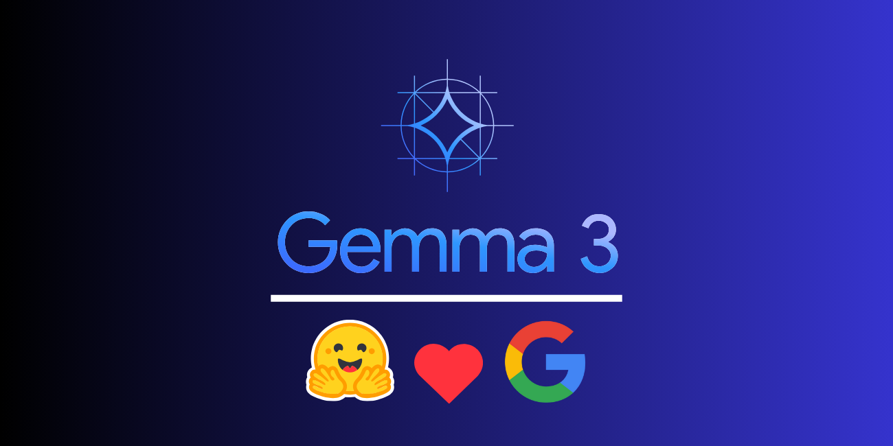

技術堆疊
前端
使用 **FlutterFlow**，實現跨平台（iOS, Android, Windows）的快速開發，並確保介面統一性。其低程式碼/無程式碼的視覺化建構器能大幅縮短前端開發時間，同時保持「一次編寫，到處運行」的優勢。
後端
採用 **Supabase** 作為一體化後端，提供身份驗證、即時資料庫、儲存空間及無伺服器函數。無伺服器函數將用於託管Gemma3n模型並處理對TTS服務的安全API呼叫。

AI 核心
整合 **Gemma3n** 模型與獨立的 **TTS 服務**，實現動態語音解說。Gemma3n將根據精細調整的提示生成獨特內容，再由TTS API轉換為高品質、聽起來自然的音訊。